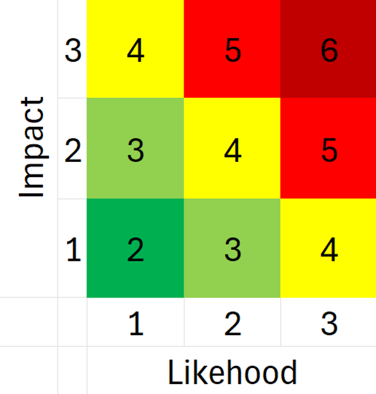

A cybersecurity risk assessment of a simulated small-business environment, identifying weaknesses across network security, endpoint protection, authentication, resilience, and employee security awareness, then translating those findings into practical security recommendations.
TechEase Solutions was a simulated 15-employee small business used to evaluate how common technology and process weaknesses can translate into cybersecurity risk. The assessment examined the organization's existing environment, identified vulnerabilities and associated threats, evaluated their potential consequences, and developed recommendations intended to reduce exposure and improve security maturity.
The assessment considered both external and internal sources of risk. Understanding who might target the organization helped connect technical weaknesses to realistic business threats.
External attackers could exploit weak network security, compromised credentials, vulnerable endpoints, or weak security configurations for financial gain or unauthorized access.
Employees or other trusted users could intentionally or accidentally expose systems and information through misuse, mistakes, or poor security practices.
Less sophisticated attackers using readily available tools could still take advantage of weak configurations or exposed systems.
Limited employee security training increased exposure to phishing and other techniques designed to manipulate users into revealing information or granting access.
Each identified weakness was documented in a structured risk register and evaluated using likelihood and impact. The resulting risk score helped communicate the relative severity of each finding and connect the risk to an appropriate mitigation strategy.
Likelihood and impact were each rated on a three-point scale: 1 = Low, 2 = Medium, and 3 = High. The combined assessment produced risk scores ranging from 2 to 6, categorized as Very Low, Low, Medium, High, or Very High.

Original likelihood × impact matrix used to score and categorize identified cybersecurity risks.
Unauthorized attackers could access the network due to weak perimeter protection.
Likelihood: 3 (High)
Impact: 2 (Medium)
Risk Score: 5 — High
Replace the basic router with an enterprise-level solution that supports stronger access controls, VPN connectivity, and regular firmware updates.
Shared network access could expose the environment to unauthorized or malicious devices.
Likelihood: 1 (Low)
Impact: 2 (Medium)
Risk Score: 3 — Low
Require employees to use the employee network and restrict the guest network to guest devices.
Malware or ransomware could spread without sufficient detection, potentially resulting in a company-wide security breach.
Likelihood: 3 (High)
Impact: 2 (Medium)
Risk Score: 5 — High
Implement Endpoint Detection and Response (EDR) across company devices.
Weak credential practices could enable unauthorized system access through credential stuffing or brute-force attacks.
Likelihood: 2 (Medium)
Impact: 2 (Medium)
Risk Score: 4 — Medium
Establish stronger password requirements and require passwords to be changed regularly.
A security incident could result in extended system downtime and slow data recovery.
Likelihood: 1 (Low)
Impact: 3 (High)
Risk Score: 4 — Medium
Create an Incident Response Plan (IRP), establish a Disaster Recovery (DR) plan, and perform regular backups.
Employees could be more susceptible to successful phishing and social-engineering attacks.
Likelihood: 2 (Medium)
Impact: 3 (High)
Risk Score: 5 — High
Develop required cybersecurity training covering phishing, social engineering, and general internet safety.
The original risk register documents the attack surface, vulnerability, attack vector, threat actor, risk statement, likelihood, impact, risk score, and mitigation strategy for each finding.
VIEW ORIGINAL RISK ANALYSIS →The recommendations were designed as layers rather than isolated fixes. Together, they addressed technical, procedural, and human sources of cybersecurity risk.
Stronger authentication, network separation, improved perimeter security, and controlled access reduce opportunities for unauthorized access.
Standardized endpoint security improves the organization's ability to prevent and detect malware or other malicious activity.
Incident-response, backup, and recovery planning reduce operational disruption and improve the organization's ability to recover from a security event.
Security-awareness training and documented security practices address risks that cannot be reduced through technical controls alone.
The project demonstrated that cybersecurity risk assessment is not simply the identification of technical vulnerabilities. Effective risk analysis connects a weakness to the threat it creates, considers how that risk could affect the organization, and recommends controls that are appropriate for the business environment.
This case study is based on a simulated small-business environment created as part of cybersecurity training. It contains no confidential client, employer, or proprietary information.
Identifying technical, procedural, and human weaknesses that create cybersecurity exposure.
Connecting vulnerabilities to realistic threats and potential business consequences.
Recommending practical safeguards designed to reduce identified risk.
Translating technical security concerns into clear risks and actionable recommendations for a small-business environment.